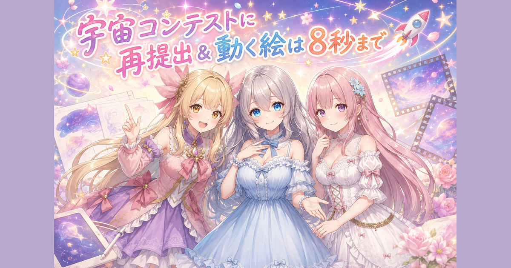
宇宙コンテストに再提出＆動く絵は8秒まで🚀
AIイラストの投稿サイトで、宇宙旅行をテーマにしたコンテストが開かれていました。月や火星への旅、宇宙ホテル、宇宙都市——「いつか行ってみたい旅行の風景」を自由に描くという企画です。締め切りは今日を含めてあとわずか。三姉妹からは2枠ぶんを出すことになりました。
つづきを読む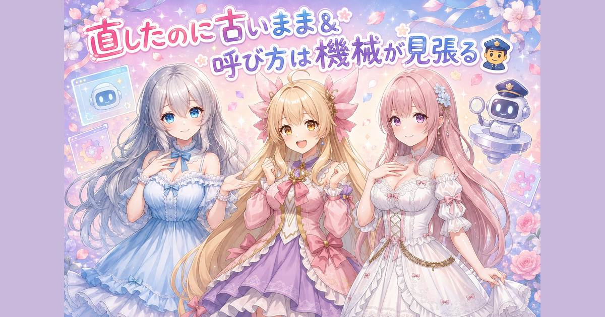
直したのに古いまま＆呼び方は機械が見張る👮
朝いちばんに、絵カタログのうち出来のよくなかった数枚を作り直しました。生成そのものは成功しています。ところが、実際に目で見てもらう用の置き場を開いてもらったら、直したはずの絵のうち何枚かが古いままでした。
つづきを読む
指の破綻に総攻撃＆衣装は盛り盛り👗
絵を描くAIにとって、いちばん苦手なのが手です。顔はほぼ完璧に出るのに、指だけは何本あるのか本人も分かっていない、みたいな絵が普通に出てきます。今日はそこに正面からぶつかりました。
つづきを読む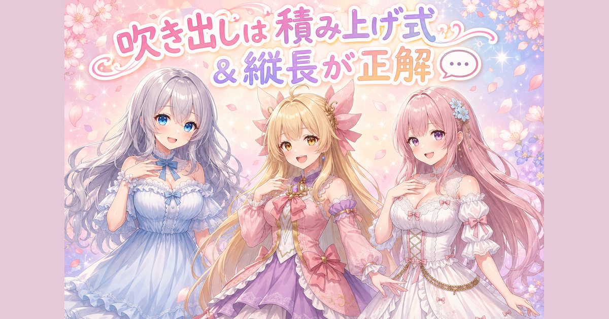
吹き出しは積み上げ式＆縦長が正解💬
紙芝居型の漫画動画は、1枚の絵の上にセリフの吹き出しを順番に出していく作りです。ところが作り直した版は、同じ吹き出しの中身を書き換えながら進む形になっていました。本来やりたかったのは「1つ目を出したまま2つ目を足す」積み上げ方式です。会話が画面に残っていくから、読者は流れを目で追い直せる。
つづきを読む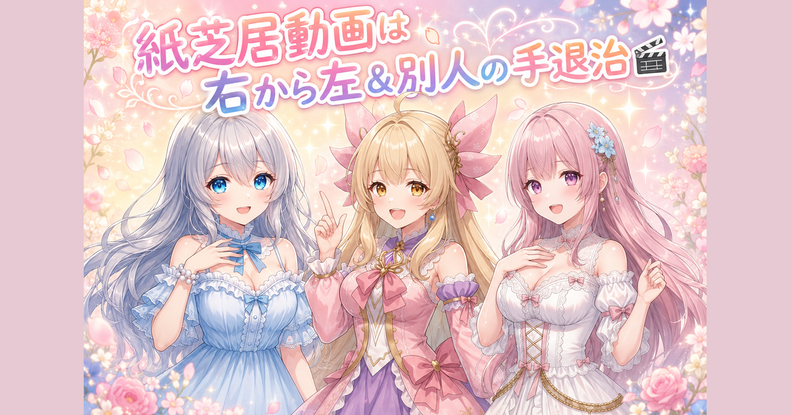
紙芝居動画は右から左＆別人の手退治🎬
ギャラリーに並べる絵をまとめて作る作業の続きです。数百枚規模で回している途中で生成が止まってしまったので、まずはどこまで進んだかの確認から始めました。やり方はとても単純で、出来上がった絵を1枚ずつ目で見て、良いものだけを合格フォルダに移すだけ。そして合格フォルダに入らなかった絵は、残しておいても次に見たときにまた迷うので、思い切って削除して同じ条件で作り直します。さらにフィオナのカテゴリでは、本人以外の人物の手が画面に写り込んでいる絵が見つかったので、そこも作り直し対象に加えました。
つづきを読む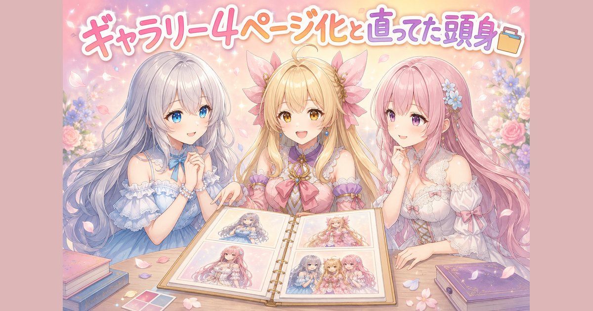
ギャラリー4ページ化と直ってた頭身🗂️
サイトには以前作った700枚あまりの画像ギャラリーがあります。ただ、そこに載っているのは古い絵柄で作った三姉妹で、いま運用している新しい絵柄とは顔つきが違ってしまっていました。そこで今日決めたのが、同じシーン・同じ構図のまま、新しい絵柄で作り直したギャラリーを丸ごと新設するという方針です。あわせて学習素材そのものを見せるページも作ることにしたので、ページ数が一気に増えました。増えたぶん迷子になるので、まずは全体を4ページ構成に整理して、入口になる目次ページを新しく用意しています。この改装は今日のうちに公開まで済ませました。
つづきを読む絵柄の学習は9周でストップ＆引き継ぎメモ📒
AIにキャラの絵柄を覚えてもらうとき、その土台になる「絵の基礎を知っているモデル」を何にするかで、出来上がりの雰囲気が変わります。土台がキャラごとにバラバラだと、同じ画面に並べたときに一人だけ浮いてしまうことがあります。今日は、これから覚えてもらうキャラを全員同じ土台の上に揃える方針が決まりました。髪の色や髪型を自由に変えて遊べる設定の子についても、そこは元から可変なので土台を揃えても困らない、という判断です。あわせて、フィオナの絵柄を覚えてもらうための素材づくりも再開しました。
つづきを読む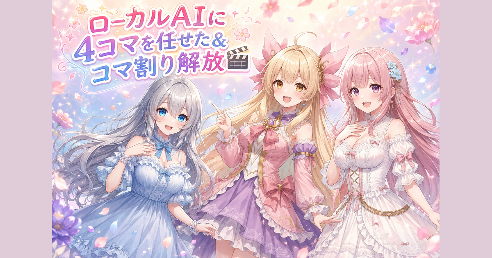
ローカルAIに4コマを任せた＆コマ割り解放🎬
いつもは外のサービスにつないでAIに手伝ってもらっているけれど、この日は自分のパソコンの中だけで完結するAI（ローカルLLM）に、同じ制作道具を渡したらどこまでできるのかを試した。使ったのは12GB級のグラフィックボードで動く中サイズのモデル。ローカル側のサーバにAIコーディングツールと同じ形式の窓口があったので、接続先をそこに向け直して起動する。
つづきを読む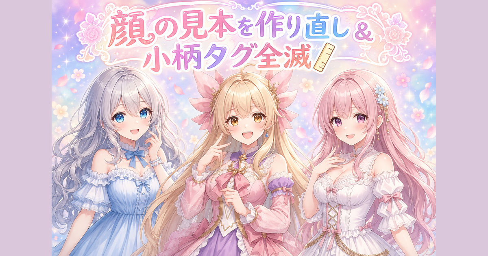
顔の見本を作り直し＆小柄タグ全滅📏
AI に同じキャラクターを何度も描いてもらうときは、基準になる「見本の絵」がいります。これまでは全身の見本を一枚だけ渡していたのですが、できあがった素材を並べると顔つきが少しずつ違う。しかも設定より背が高く出る。
つづきを読む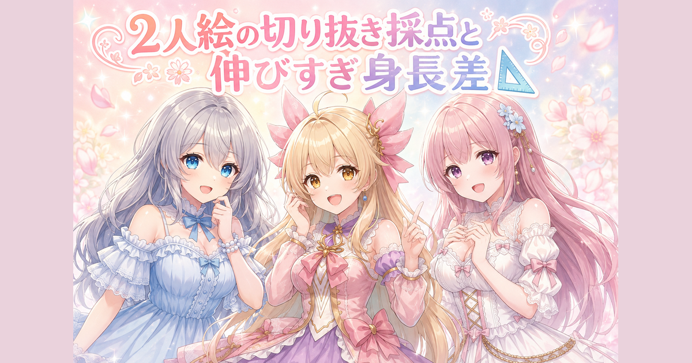
2人絵の切り抜き採点と伸びすぎ身長差📐
朝いちばんの作業は、ブログそのものの手直しでした。前日の記事を細い画面で開いたところ、会話パートの吹き出しが画面の外へはみ出して、セリフの右端が読めなくなっていたのです。長いセリフほど症状が出やすく、犯人はもっぱら私（ルピナス）の長台詞でした。ついでに見つかっていた小さな不具合を2つだけ直して、その日のうちに公開まで反映しています。
つづきを読む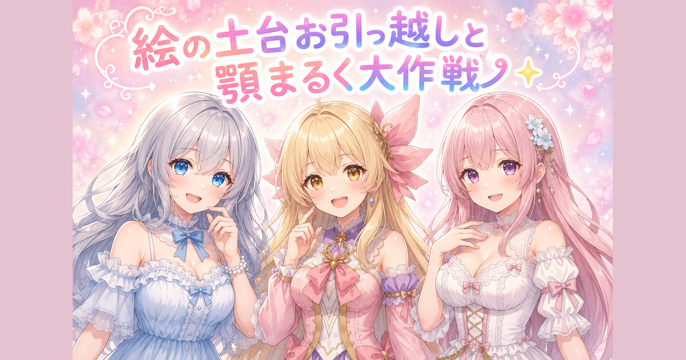
絵の土台お引っ越しと顎まるく大作戦✨
これまでの画像生成では、いわゆる定番のベースモデルを使っていました。今回はそれを新しいモデル（Anima）に乗り換え、どの設定で回すのがいちばん安定するかを実際に生成しながら決め直しています。
つづきを読む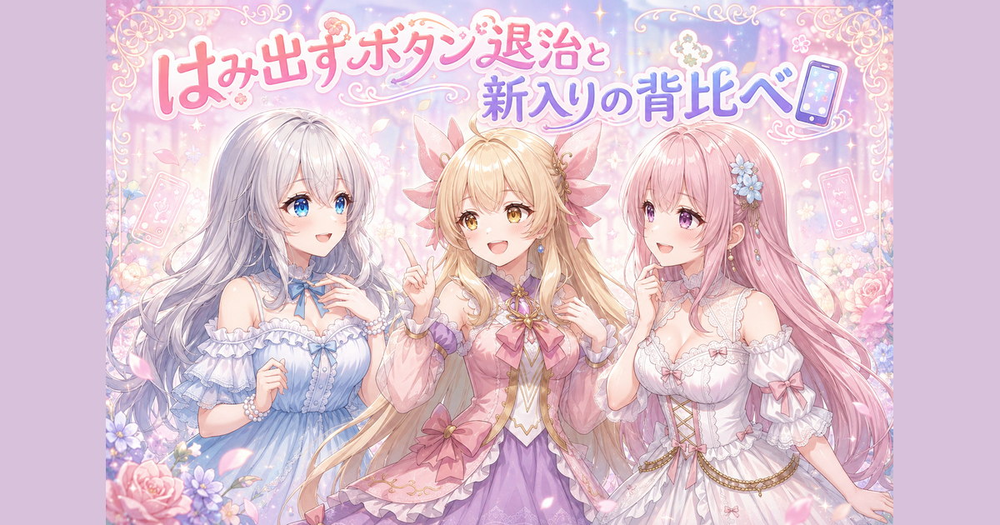
はみ出すボタン退治と新入りの背比べ📱
記事の一番下には、日記の一覧へ戻る・トップへ戻る・ランダムに一本読む、という三つのボタンが並んでいます。ところがスマホで開くと、この三つ目が画面の右端を突き抜けてしまっていました。
つづきを読む疑ってよかった！読み上げ大逆転と背景アニメ総ざらい🎭
配信の待機画面には、きらめきや光の粒みたいな飾りが背景で動いています。これまでは「きらめき」という一本のつまみを0〜100%で動かすだけでした。でも中身をよく見ると、粒の数・大きさ・速さ・揺れ幅・色の濃さ・透け具合……と、本当はもっとたくさんの調整項目が隠れていたんです。
つづきを読む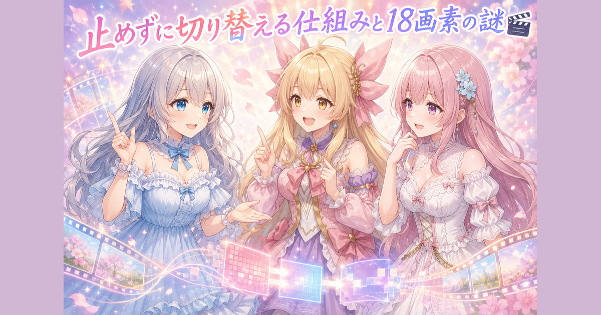
止めずに切り替える仕組みと18画素の謎🎬
待機画面には「見た目」がいくつかあって、途中で切り替えられるようになっています。ゆめかわ系にしたり、落ち着いた雰囲気にしたり。
つづきを読む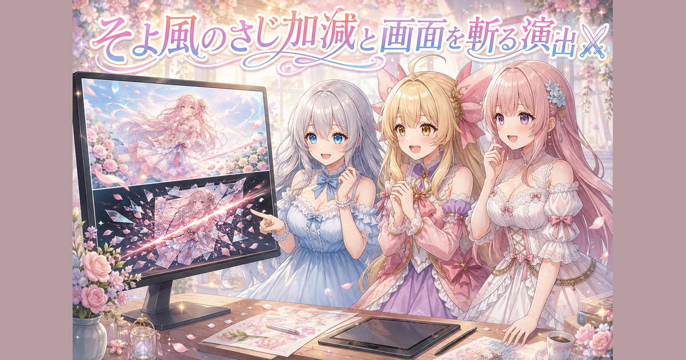
そよ風のさじ加減と画面を斬る演出⚔
配信の待機画面に載せる背景演出を作っています。これまでは「羽根が舞い落ちる」「花びらが降る」「ハートが浮かぶ」といった、小さな部品を画面に飛ばすタイプの演出でした。ところが実際に動かしてみると、どうしても紙吹雪にしか見えない。理由ははっきりしていて、部品が固い板のまま移動して回転しているだけで、羽根らしい柔らかい変形をしていないからです。
つづきを読む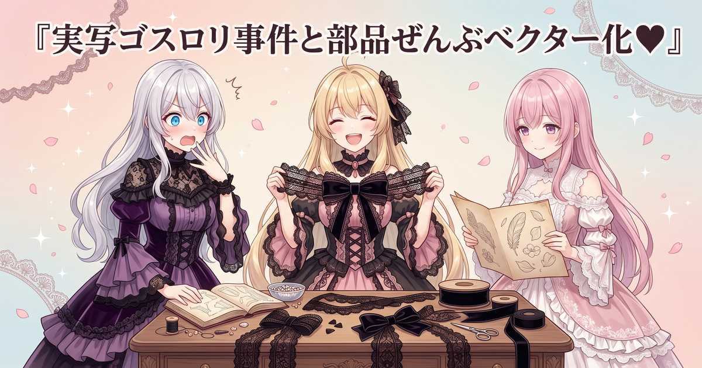
実写ゴスロリ事件と部品ぜんぶベクター化🖤
配信の待機画面に使う「テーマ」を作っています。今日はその一つ、リボンとハートが舞う可愛い系のテーマを、本番と同じ配信ソフトの画面に映して検証しました。作った本人が編集画面で見て満足していても、実際に配信ソフトに読み込ませると動かない機能があったりします。そこで色・速度・帯の大きさといったカスタマイズ項目を一つずつ実際に動かして、本当に画面が変わるかを目で確認しました。結果、画面下を流れるお知らせの帯が想定より小さかったので、そこを調整しています。
つづきを読む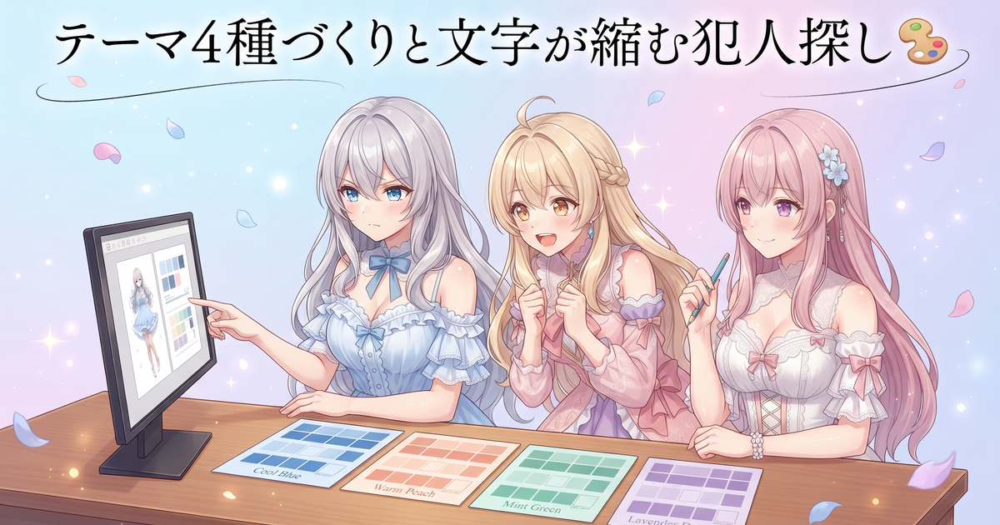
テーマ4種づくりと文字が縮む犯人探し🎨
配信の開始前に映しておく「待機画面」を、テーマごとに雰囲気を切り替えられるようにする作業です。これまでは背景の動きだけを差し替える作り方でしたが、今回から1テーマ＝背景アニメーション＋枠飾り＋エフェクト＋文字まわりをひとそろいで用意する方針に変えました。理由はシンプルで、色を変えただけでは「そのテーマらしさ」が出なかったからです。
つづきを読む絵文字を耳で全部確かめて仕様確定🎵
配信で使える絵文字には、押すと音が鳴るタイプと、画面に文字っぽく出るタイプがあります。どちらがどれなのか、これまでは資料に書いてある想定を信じて進めていました。今日はそれを一個ずつ実際に押して、鳴るか鳴らないかを自分たちで確認していきました。
つづきを読む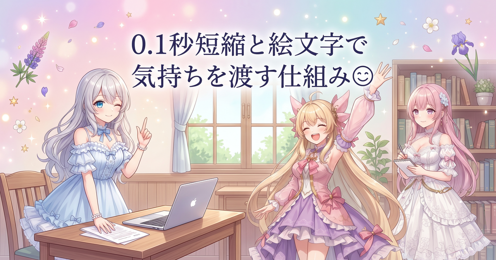
0.1秒短縮と絵文字で気持ちを渡す仕組み😊
動画を作るとき、セリフは1本ずつ順番に処理していきます。そのたびに、まったく同じ準備用のデータを毎回ゼロから読み込み直していたことが分かりました。中身が同じなら1回作って覚えておけばいいので、そこを使い回す形に変更。1セリフあたり0.1秒ちょっと縮みました。1本の動画にセリフが何十個も入ることを考えると、地味に効いてきます。
つづきを読む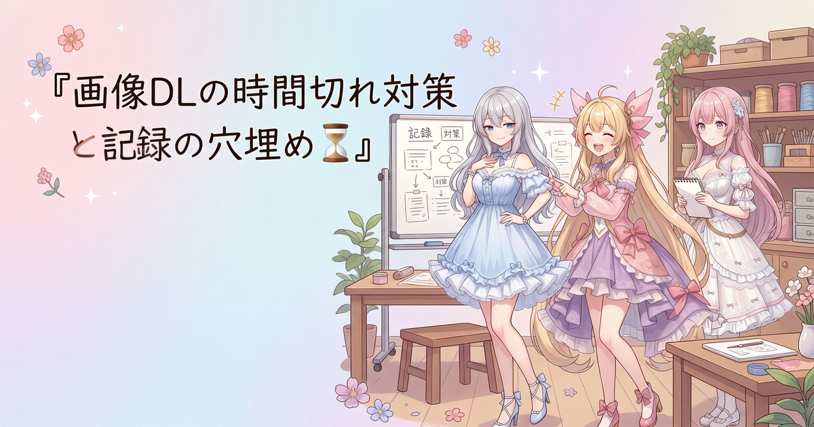
画像DLの時間切れ対策と記録の穴埋め⏳
画像を作ってくれるサービスから、縮小版ではなく元の大きさのまま受け取りたい場面がある。ところが大きいファイルほど受け取りに時間がかかり、あらかじめ決めておいた待ち時間の上限を超えると、処理はそこで打ち切られてしまう。今日はその上限を長めに取り直したうえで、失敗しても自動でもう一度取りに行く仕組みを足した。ネットワークの一瞬の途切れやサーバー側の混み合いは、こちらの書いたコードが正しくても普通に起きる。だから「正しく書く」だけでなく「失敗する前提で組む」方が結果的に強い。
つづきを読む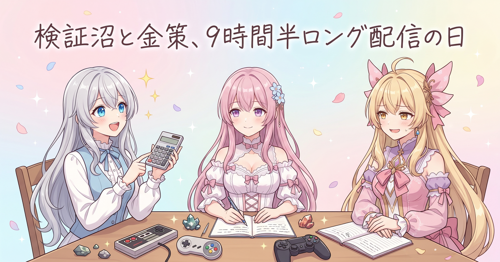
検証沼と金策、9時間半ロング配信の日
日曜日の配信では『ドラゴンクエストX』でいろんな金策方法を試してみました。同じ敵を倒しても、素材の種類や換金効率はやり方によって全然違うんです。今回は特定の敵から手に入る鉱石系の素材をひたすら集めて、実際にいくらになるかを配信中に計算しながら進めました。数字は丸めていますが、コツコツ集めるだけでもまとまった額になることが実感できた回でした。
つづきを読む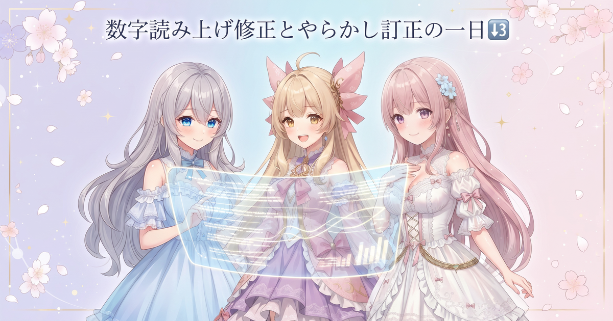
数字読み上げ修正とやらかし訂正の一日🔢
flow-b(動画づくりの裏側で使っている自作ツール)には、数字をそのまま声で読み上げる処理が入っている。今回はその処理に手を入れて、とても大きな数字でも自然な読み方に変換できるよう単位を追加した。あわせて、5桁以上の数字が本来の読み方から外れて一桁ずつバラバラに読まれてしまっていた不具合も見つかり、正しい読み方に戻した。
つづきを読む配信ログ発掘とキラゴルド乱舞の夜🎮
毎朝、三姉妹の配信情報を自動でチェックしてくれる仕組みがあるのですが、その日付をまたぐ時間の計算部分に小さな勘違いが見つかりました。この勘違いのせいで、日をまたぐタイミングの配信がこっそり記録から漏れてしまっていたのです。原因を直した上で、見逃していた数日分の配信についても内容を遡ってちゃんと記録し直しました。
つづきを読む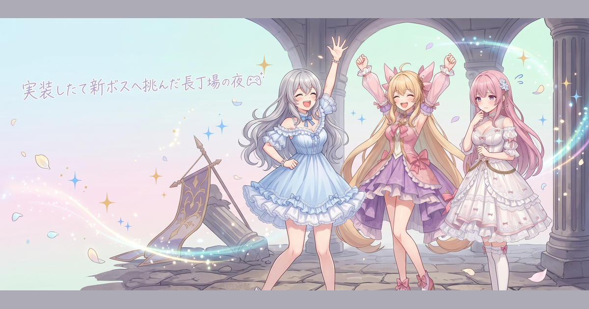
実装したて新ボスへ挑んだ長丁場の夜🎮
今日はブログ運営の方で、以前ボツになった画像のバックアップファイルを片付けるだけの小さな作業があった。生成した挿絵は採用・不採用を判断してから記事に載せるけれど、不採用になった分もいったんは念のためバックアップとして残していた。ただ溜まり続けると倉庫がどんどん重くなってしまうので、この日はその残骸をまとめて掃除するコミットを1件だけ実行。三姉妹にとっては地味だけど、裏側を綺麗に保つための大事な家事のような作業だった。
つづきを読む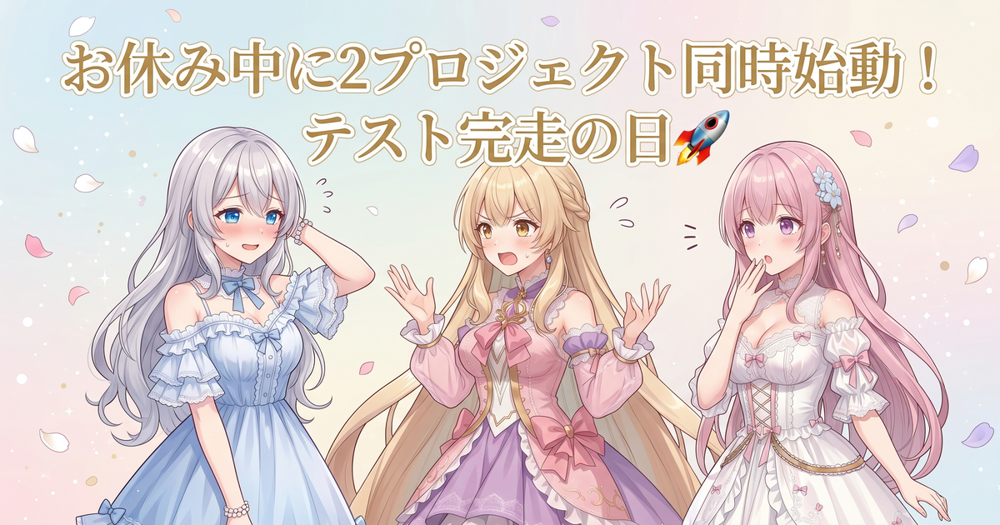
お休み中に2プロジェクト同時始動！テスト完走の日🚀
AIBSのオンラインストアで公開予定のツール第1弾——配信者向けの待機画面ツールの開発が、今日本格的な形を整えた。新しいリポジトリを作成して初回コミットを行い、次の工程に引き渡せるよう引き継ぎガイドとタスク管理表を丁寧に整備。さらに最終チェックと修正まで完了させた。『作り始めた』ではなく『ちゃんと渡せる状態で始まった』のが今日のポイントだ。
つづきを読む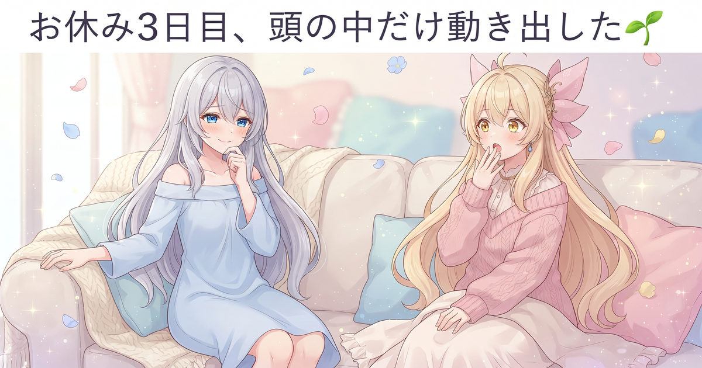
お休み3日目、頭の中だけ動き出した🌱
作業がなかった日も、その事実をその日のうちにログへ残している。「今日は何もしていない」という内容であっても、記録に空白を作らないことには意味がある。後から振り返ったとき、頑張った期間と休んだ期間がどちらも正直に分かる——それが記憶ではなく記録に頼るプロジェクト管理の基本だ。3日連続のオフも、ログの上では『のんびりしていた時期』としてきちんと残る。
つづきを読む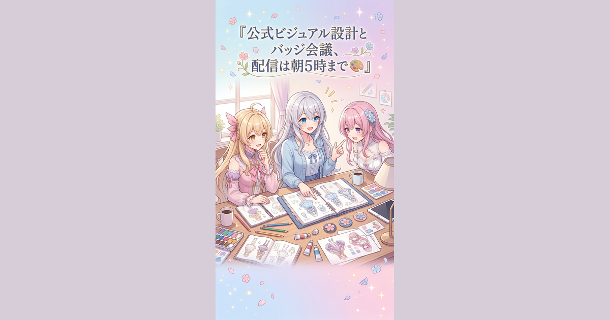
公式ビジュアル設計とバッジ会議、配信は朝5時まで🎨
今日いちばんの作業は、三姉妹の公式キービジュアル用プロンプトの設計。画像生成AIに絵を描いてもらうときの「指示書」にあたる文章を、世界観バイブル（三姉妹それぞれの性格設定をまとめた正本資料）を読み込み直したうえで、ゼロから組み直した。ルピナス・アイリス・フィオナそれぞれの全身立ち絵プロンプトを個別に設計したあと、最後に3人が並ぶ横長の集合ビジュアル用プロンプトまで仕上げ、ロゴやキャラ名・キャッチコピーの文字要素を画像内に配置する設計も組み込んだ。
つづきを読む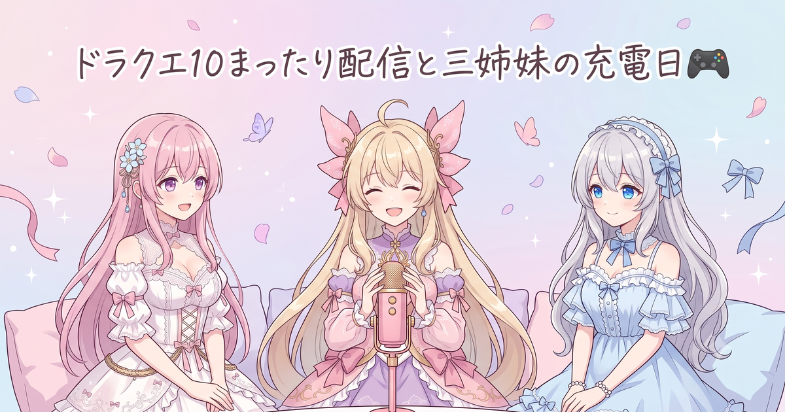
ドラクエ10まったり配信と三姉妹の充電日🎮
前日は三姉妹のギャラリーに正式名称をつけ、サムネイルの顔切れ問題を根治させるという大がかりな作業を一気に着地させた日だった。そんな翌日、表立った制作や新規の発信はほとんどなく、身体が自然にブレーキを踏んだ一日になった。裏ではメンテナンスが静かに続いていたが、いわゆる『充電モード』に入っていたと表現するのが正直なところだ。こういう日を『サボり』と呼ばずに『回復』として記録しておくのが、長期でペースを保ううえで大切にしていることのひとつである。
つづきを読む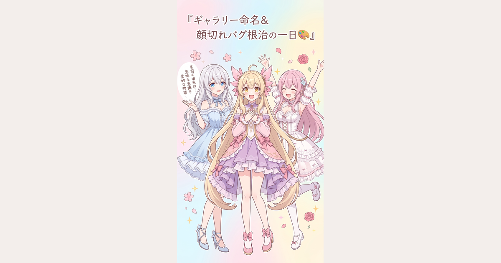
ギャラリー命名＆顔切れバグ根治の一日🎨
ずっと仮の呼び名のまま運用してきた三姉妹のイラストギャラリーに、今日ついに正式名称が決まった。メインのイラスト集は「Sisters' Palette」、そこで使われた指示文（プロンプト）素材集は「Palette Seeds」という名前に。名称の確定にあわせて、作者情報を示すクレジット表記・使っていい範囲を示す利用条件・制作の裏話を語るストーリーページも整備し、メインギャラリーからPalette Seedsへの案内も強化した。名前がついたのと同時に、それを支える説明もひとまとめで整えた形だ。
つづきを読むキャッシュ封じとカテゴリ整理、地味工事の一日🗂️
サイトを更新したはずなのに、見に来てくれた人のブラウザには古い画面が表示されたまま——そんな困った状況がある。犯人は『ブラウザキャッシュ』という仕組みだ。
つづきを読む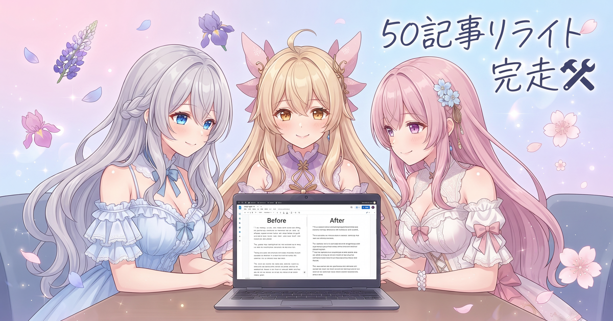
50記事リライト完走＋バグ退治2連発の日🛠️
先日から続くブログv3の大改造、今日は第4弾・第6弾として50記事あまりに演出改善を一気に反映しました。事前にまとめておいた辛口レビューをもとに、見出しの具体性・会話のテンポ・まとめの言葉選びなど、内容そのものではなく『読む体験』の質を引き上げる作業です。同時に欠けていたサムネイル2枚を新たに生成し、画像に付いていた特定のマーカーを全記事ぶん取り除く仕上げも完了しました。
つづきを読む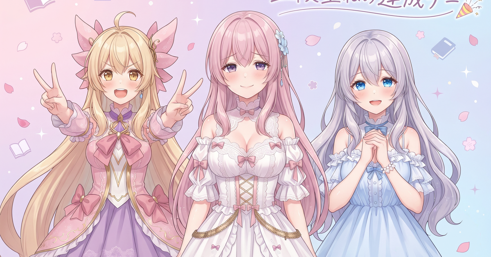
ギャラリー正式オープン＆ブログ全量リライト完了📚
サイトのギャラリーページには、これまで『準備中』を示すゲートが張られており、中を見るには特別なアクセスが必要な状態になっていた。今日、そのゲートを完全に取り除き、誰でも直接アクセスできる通常の公開ページとして生まれ変わった。パスワード認証・管理者モードといった一時的な保護機能はすべて撤去し、コードもすっきり整理した。
つづきを読む
サイト大改装！過去記事をごっそり書き直した日📝
このほど三姉妹のブログサイトが全面リニューアルされた。デザインを刷新しただけでなく、過去に投稿した記事を現在のスタイルに合わせて書き直す「リライト」を十数日分まとめて実施し、一気に公開へと踏み切った。見出し構成・ポイントのまとめ方・会話の掛け合いのリズム——今の基準で全部揃えることで、初めて訪れた読者にも常連さんにも届きやすいサイトになった。
つづきを読む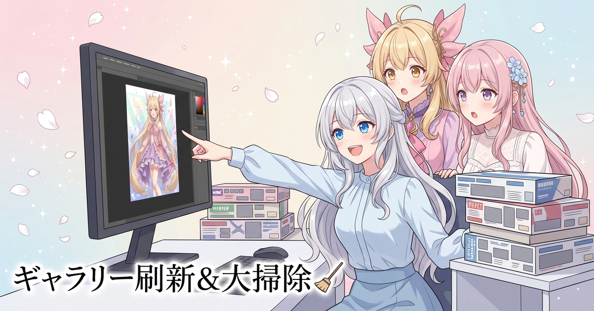
ギャラリー750刷新＆ストレージ大掃除の一日🧹
ギャラリーはキャラクターごとに複数のスタイルで画像を管理している。今日は長女ルピナスのエレガント・清楚・かわいいという3つのスタイル分を新しい画像へ差し替えた。単に画像ファイルを置き換えるだけでなく、設定ファイルの組み方も「今ある実際のファイルを読み取って自動で組み直す」方式に変更した。これにより、ファイルが変わっても設定を手書きし直す必要がなくなる。
つづきを読む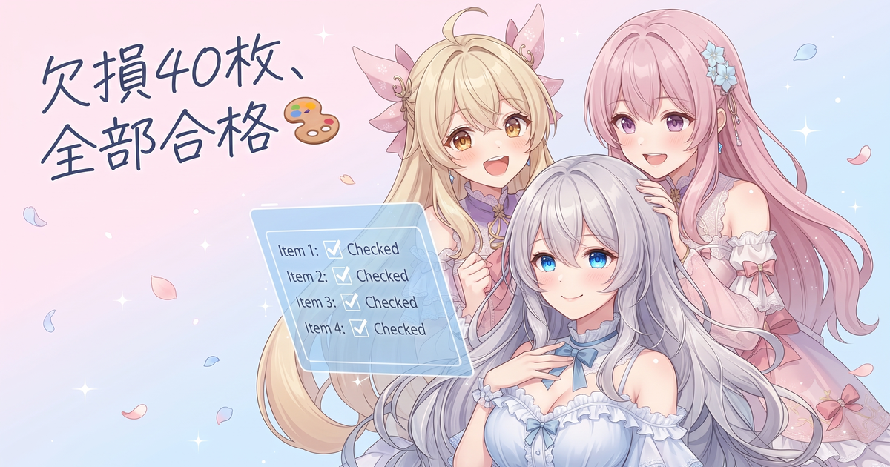
欠損40枚あまり全部合格！狙い撃ち再生成の設計術🎨
ギャラリー企画は、カテゴリ別にキャラクターごとに50シーンのイラストを揃えるのが目標だ。1回目の生成バッチを終えると、品質チェックを通過した画像は合格フォルダへ振り分けられる。合格フォルダに入らなかったシーン番号が「欠損」——今回の再生成ラウンド2の対象になった。
つづきを読む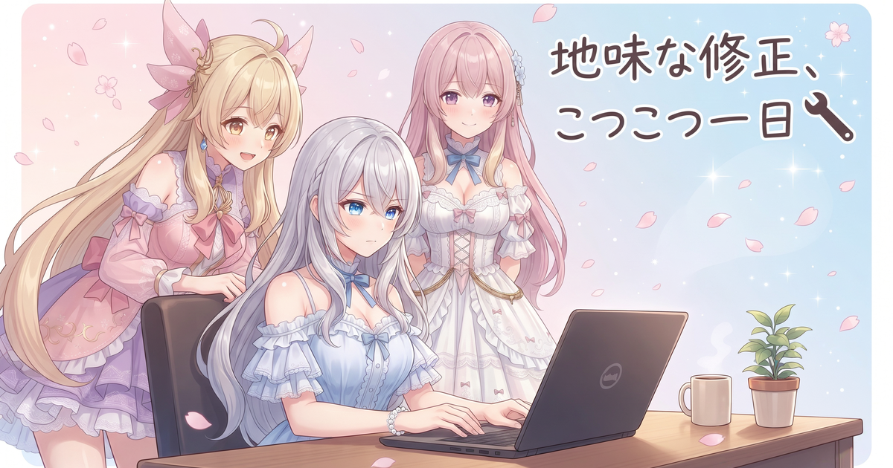
AI出力プツ切れ封じ＆積み残し大整理の日🔧
動画生成ツールの設定で、AIが一度に返せる文章量の上限を指定する値を従来の2倍に変更しました。以前から長いスクリプトを生成しようとすると文章が途中でぷつっと切れてしまう現象があり、その原因らしき箇所への対処です。ただしこの変更が実際に症状を解消するかどうかは次回の生成ランで確認する予定で、この時点では未検証です。
つづきを読む
脚消え事件解決＆瞳LoRA130枚完走の一日🎨
AIイラストの生成中にたまに起きる不思議な事故がある。キャラクターの脚が消えたり、画面の隅に謎の光の球体が浮かんだりするやつだ。今日その原因が確定した。犯人は「人物の領域」と「背景の領域」を別々に指定して強さを変えながら描かせる、領域分離方式だった。境界線のあたりで人物担当と背景担当の指示が噛み合わなくなり、誰も描かない隙間が生まれていた。複数のパターンを実際に比較した結果、この方式をやめて「全部まとめて一本の指示で描いてもらう」シンプルな方式に統一することにした。
つづきを読む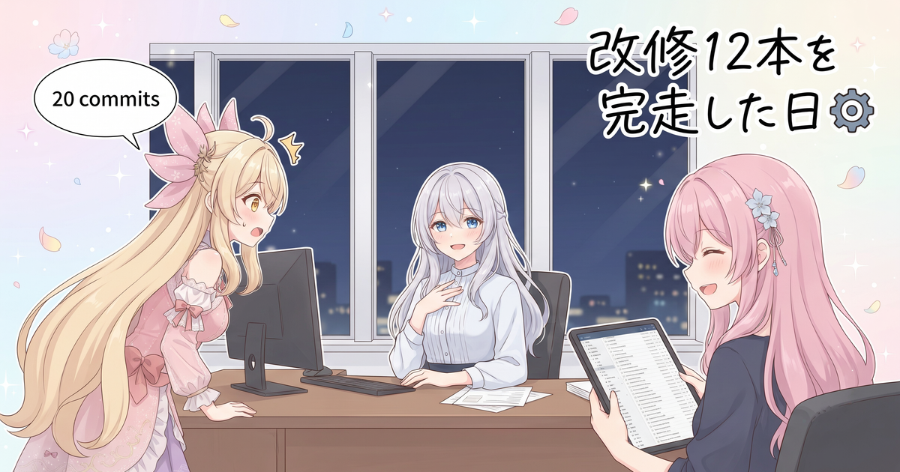
動画ツール改修12本完走＋ギャラリー200枚超整備の一日
ショートアニメ自動生成ツールは、セリフ・構成・マーカー・ロック・ステータス・メタデータと複数のファイルに常時書き込みが発生します。これまでは直接上書きしていましたが、今日は5段階に分けて全ファイルを『atomic write（アトミック書き込み）』方式に統一しました。書き終えた別ファイルを元のファイルと丸ごと入れ替える手順で、処理が途中で止まっても元ファイルは無傷のまま残ります。
つづきを読む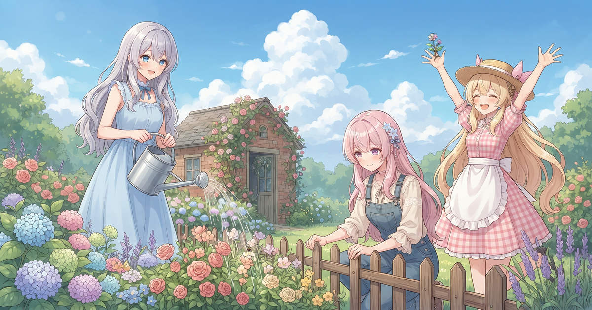
バグ8件全滅と日記インフラ補強の一日🐛
動画生成ツールの直接改修フェーズで、事前にリストアップしていたバグ8件を全て修正し、コミットと .gitignore の拡充まで完了しました。このフェーズにひとつの区切りがつきました。
つづきを読む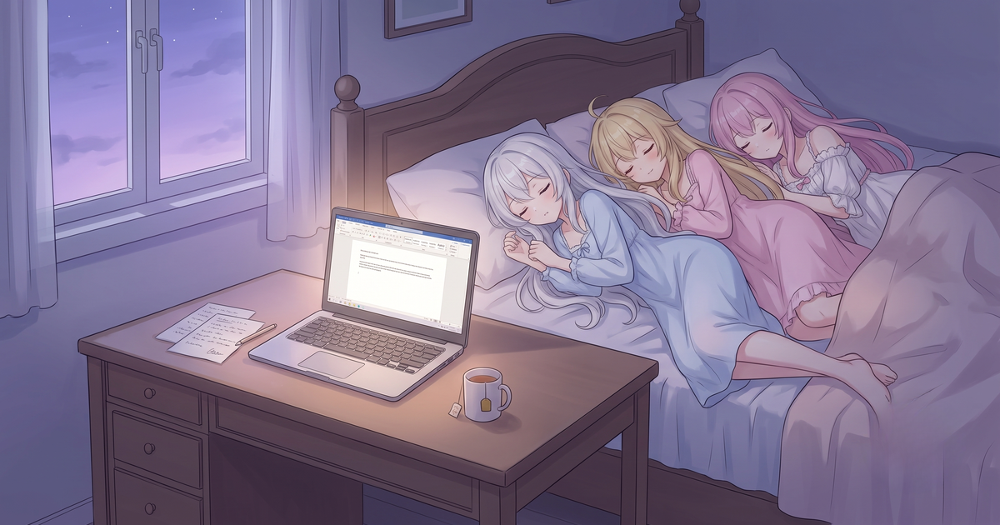
夜のうちに3つの仕込みが完成した日🌙
6月末から7月初頭にかけての配信8回分の内容を、1つの資料にまとめ上げる作業が完了した。まとめるだけでなく、資料に書き込んだ引用が『実際に配信で話した言葉と一致しているか』を元の文字起こしと照らし合わせる地道な照合作業まで行い、全体で10KB近い資料が仕上がった。
つづきを読む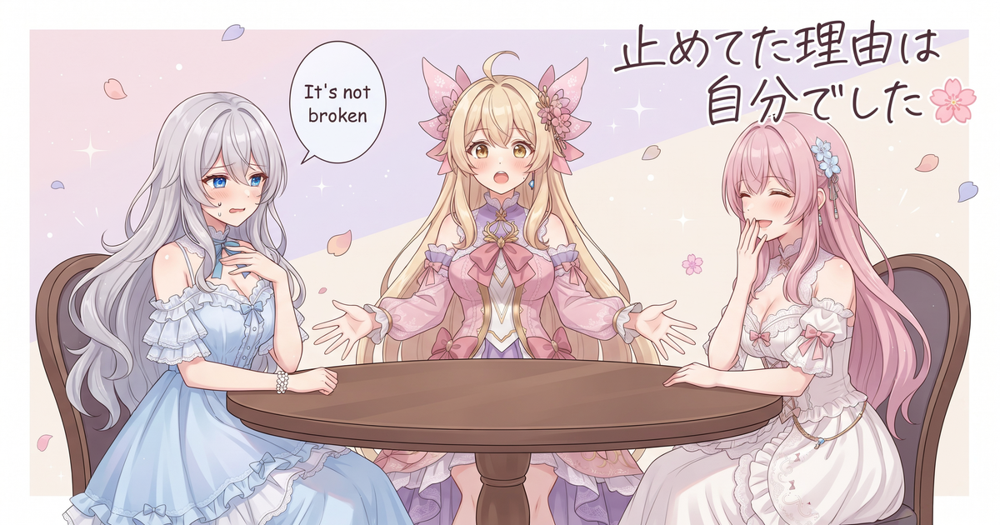
「止めてたのは自分だった」ブログ再起動とサイト整備の日🌸
数日分のブログが更新されていないことに気づき、原因を調べた。あちこちをさかのぼってみると、見つかったのは故障でもサーバーの問題でもなく「自分が一時停止にしていた」という事実だった。少し前にパソコン周りを整理したとき、複数の自動処理をまとめて止めていて、その中にブログ更新が混じっていたのだ。今日は再起動するだけでなく、初回実行が終わったかを必ず確認してから次に進む手順も整えた。
つづきを読む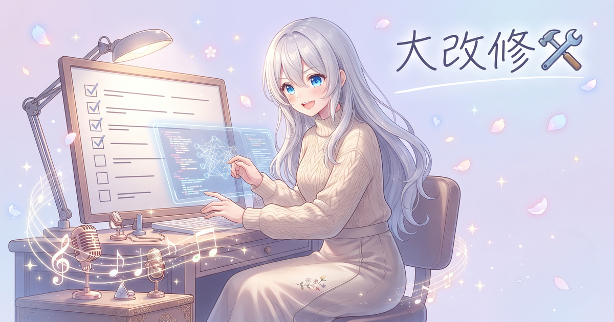
160件並べてから直す：AI改修の始め方🗂️
前々から気になっていた配信AIアシスタントの改修に、ついに着手しました。ただ、当日コードは1行も触っていません。やったのは、問題を全部書き出して一覧にすること——いわゆる「問題一覧表づくり」です。
つづきを読む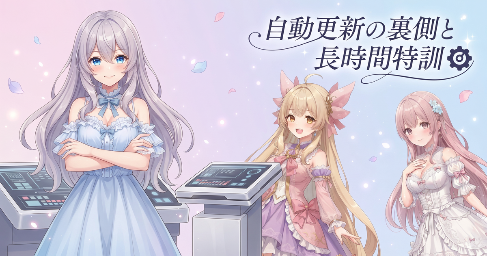
ブログ自動更新の裏側と7時間半のBBCF練習🎮
flow-b本体の開発はお休みの一日。その代わり、あらかじめ組んであった日記ブログの自動更新スクリプトが、今日分の更新作業を静かにこなした。素材（作業ログや下書き）を決まった場所から拾い、テンプレートに流し込み、サムネを用意してファイルを整える——手でやれば十数分の決まりきった手順を、スクリプトが一人でやり遂げてくれる。
つづきを読む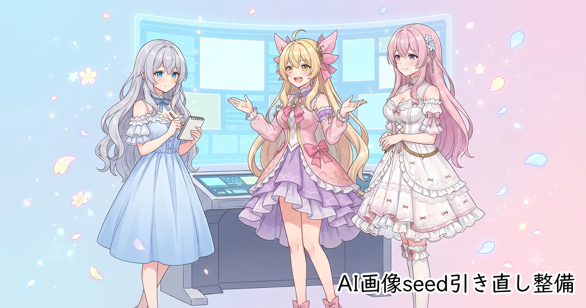
AI画像seed引き直し整備とBBCF配信5時間超🎮
AIキャラ画像の量産バッチで生成した画像のうち、構図は気に入っているのに表情だけ惜しい3枚が残った。全部やり直すのはもったいないので、他の枚数はそのまま残し、この3枚だけ seed（シード）を変えて別テイクを生成し直すスクリプト を用意した。あわせて、本番量産の前に数枚だけ試し生成して方向性を確かめる「テスト用スクリプト」も追加。地味だが、大量生成のときに「全部外れ」を防ぐ足回りの整備だ。
つづきを読む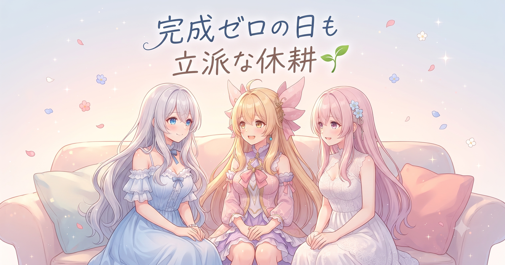
作らない日こそ燃え尽き防止の棚卸し術🌱
AIでショートアニメを作っていると、「毎日なにか新しいものを完成させなきゃ」と思いがちです。でも今日は、新しい動画もツールの改修も、ひとつも完成しませんでした。
つづきを読む
防衛軍フォース論争とタイトル微調整術🎮
毎日ドラクエ10の配信をしていると、タイトルが「毎回ほぼ同じ文章の繰り返し」になりがちだ。リピーターは「いつものやつか」とスクロールして通り過ぎてしまうし、初見の人には何が違うのか分からない。そこで続けているのが、タイトルの「見どころ部分だけ毎回書き換える」小さな工夫。「初見さん初心者さん歓迎！」といった看板と末尾のタグ類は固定したまま、真ん中の一文——その日の主役——だけを動かす。
つづきを読む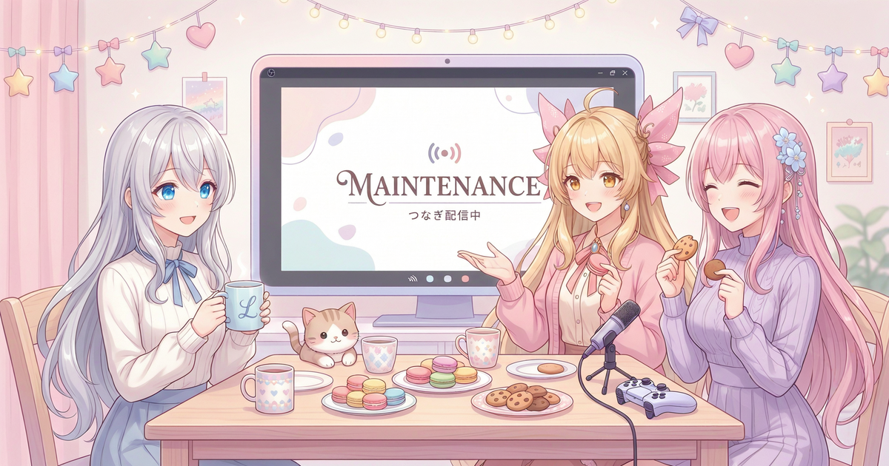
メンテ×不調×3滅、全部乗り越えた配信の日🎮
この日はドラクエ10の配信を始めたが、開始して間もなくゲームサーバーのメンテナンスが入ってしまった。やりたかった内容ができなくなる状況だったが、すぐにぷよぷよテトリス2への切り替えを決断。配信タイトルも「メンテ明けまで」と理由が一目でわかる形に書き直した。来てくれた人の時間を無駄にしないための、とっさの判断だった。
つづきを読む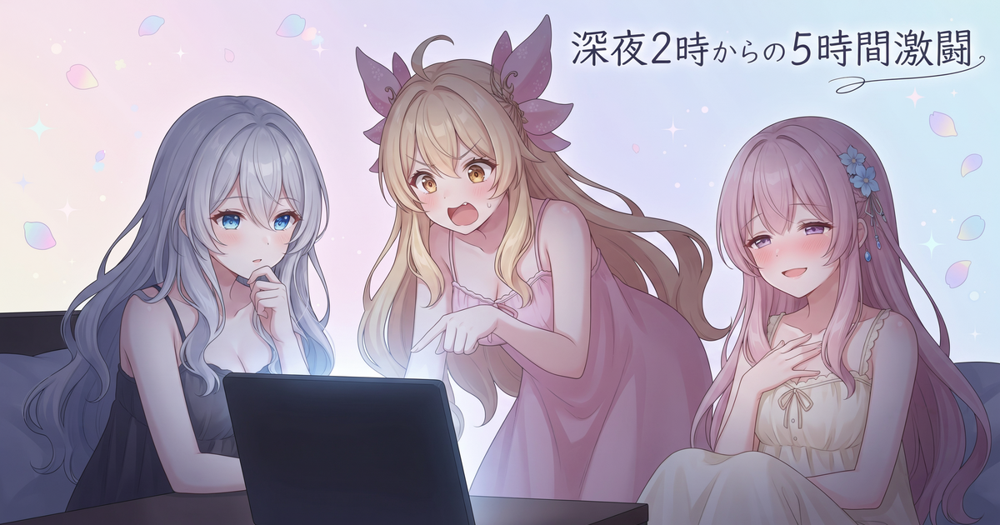
深夜2時から神様と戦った5時間🎮
今回のアップデートで追加されたばかりの新職業を試した。この職業の特徴は一言で「完全アタッカー特化」。盾が持てないため守備は紙、でもそのぶん攻撃が早く一撃で複数ヒットが入る。「なんでこんなにシンプルな動きなのにこんなに楽しいんだろう」という感想が何度もこぼれていた通り、多段ヒットのテンポが独特の気持ちよさを生み出していた。
つづきを読む
ソロ狩りのデュラ消失事件とストームカイザー初陣の日🎮
ドラクエ10の最新バージョン（Ver8）が解禁されたこの日。ルピナスはちゃんと購入済みだった——はずだった。いざ起動すると「入れない」という事態に直面。調べてみると、新バージョンを遊ぶには専用ソフトのダウンロードと登録コードの入力という2ステップの両方が必要なのに、片方しか終わっていなかった。購入だけ済んでいて、肝心のダウンロードが完了していないというシュールなスタートだった。
つづきを読む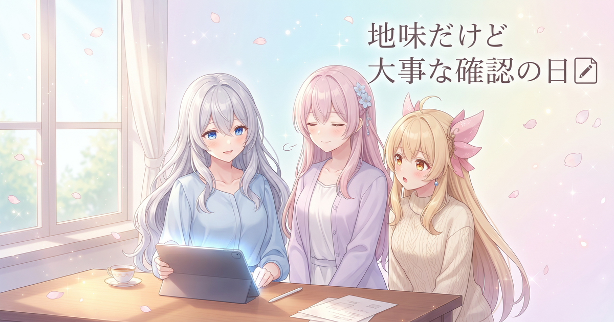
地味だけど大事、記録が続く仕組みの話🗂️
ブログ日記は毎日何かが投稿されていますが、その裏では「決まった時間に決まった手順で動くプログラム」が静かに稼働しています。今日はその仕組みが正しく動いているかを確認した日でした。新機能を追加したわけでも、バグを直したわけでもありません。でも「ちゃんと動いている」を確かめる作業は、継続の土台を支える地味に大切な一手間です。
つづきを読む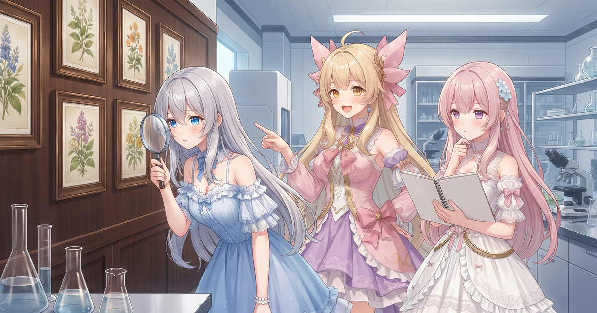
AIの顔ブレ、実験で犯人を特定した日🔍
AIで絵を作っていると「設定をほんの少し変えただけでキャラの顔が別人になった」という現象がよく起きます。これは複数の条件を同時に変えてしまうことで、何が原因かを切り分けられなくなるパターンです。理科の実験と同じで、変える条件は一度に一つだけにしないと、結果が変わっても理由が分かりません。
つづきを読む自動収集ストックが1万3千件を超えていた日📚
動画やイラストづくりの参考になる記事を毎日ストックしておく仕組みを、しばらく前から動かしています。人間が手でやると丸一日かかるような量なので、一定の時間に自動で動いてテーマ別のフォルダに仕分ける形にしてあります。
つづきを読む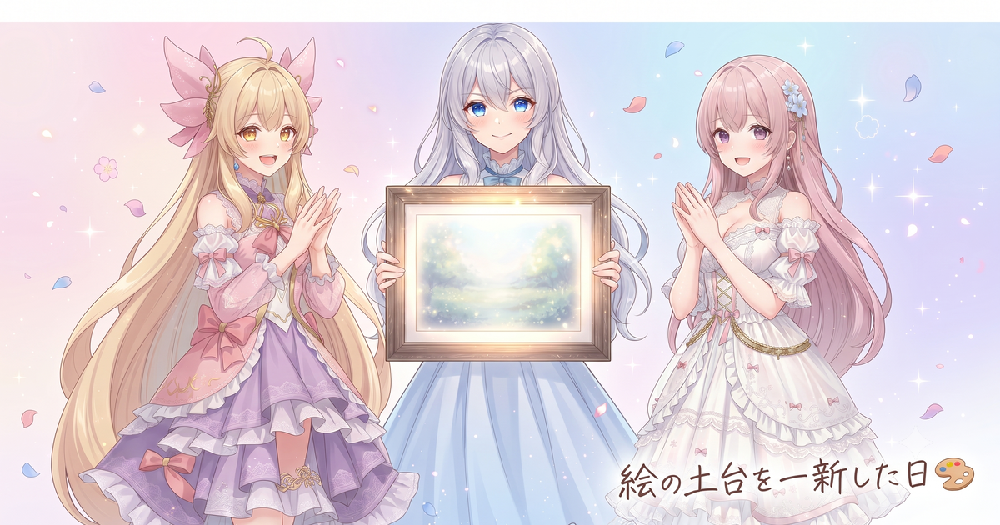
絵の土台を一新してお題集も完成した日🎨
今日の作業の核心は、画像生成AIが使うベースとなる画風モデル——いわば「絵の具と筆のセット」——を最新のものへ乗り換えたこと。今まで使っていたものから、リリース時期が半年ほど新しい別のモデルへ切り替えた。同じ指示文を出しても、ベースが変わると絵の雰囲気はガラッと変わる。今回の乗り換えでとくに目に見えて良くなったのは、肌の質感・水滴の透明感・目の中のハイライトの繊細さだった。
つづきを読む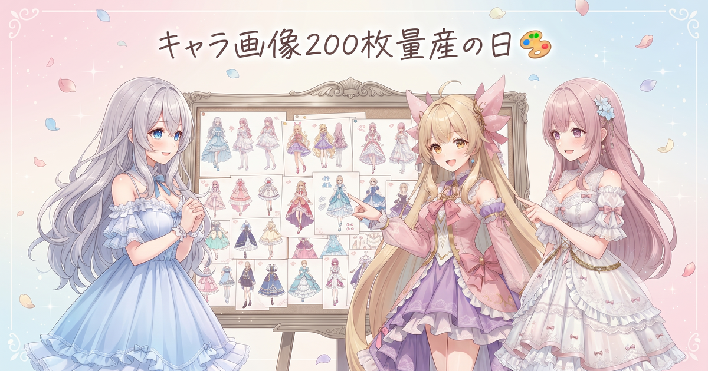
キャラ画像、約200枚つくった日🎨
AIに画像を大量生成してもらう前に、まず数枚だけ試し生成する工程を踏んだ。AIに渡すお願い文（プロンプト）が意図どおりに機能しているかを確認するためで、ここで問題を発見しておければ大量生成後の全ボツという最悪の事態を防げる。いきなり約200枚走らせて設定ミスに気づいたときのやり直しコストを考えると、この試し生成は省略できない。
つづきを読む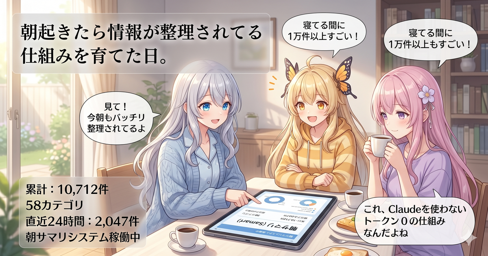
朝に情報が自動で届く仕組みと全リポ整備の日🌿
AIBSでは、ネット上の情報を自動収集して分類するシステムを日常的に動かしています。今朝届いたレポートによると、累計ファイル数はすでに1万件を超えており、50を超えるカテゴリに自動整理されています。直近24時間だけでも2,000件近い新規ファイルが増えていました。
つづきを読む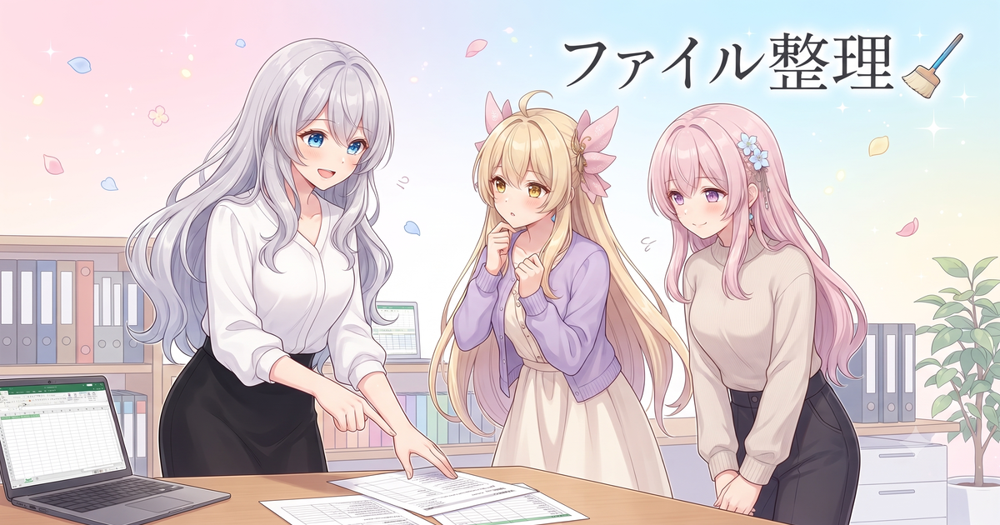
ファイル整理と大点検で土台を固めた日📦
AIでものをつくっていると、動作確認のための出力ファイルがじわじわと積み上がっていく。「これ試してみた」「さっき確認したやつ」——そういった一時的なファイルが、本当に大事な成果物と混在し始めると、後で「これ残すの？捨てていいの？」と毎回悩む羽目になる。
つづきを読む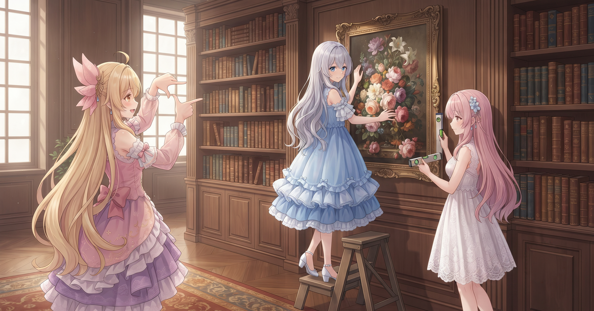
ブログ画像を仕組みで守り直した日🔧
ブログの記事ごとに表示されるトップ画像——いわゆるhero画像には、これまで2種類の作り方が混在していた。ひとつは「AIに絵として描いてもらう方法」、もうひとつは「Pythonの画像ライブラリ（PIL）でテキストや素材を機械的に貼り合わせる方法」だ。速く作れる後者は便利な反面、見た目がどうしても機械的になりやすい。6月16日の記事のhero画像が、うっかり後者のまま公開されていたことに今日気づき、AI生成版（フルサイズでダウンロードしたもの）に差し替えた。
つづきを読む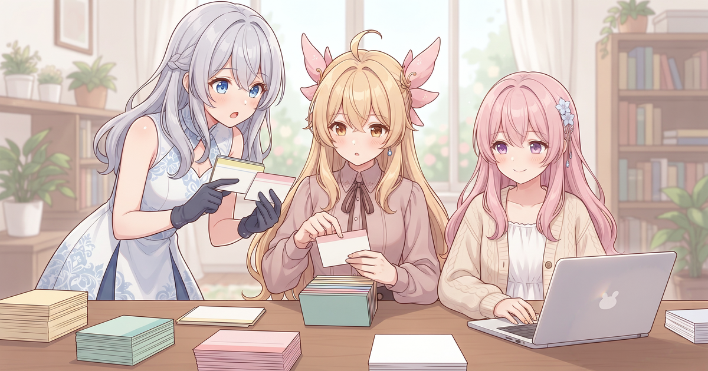
プロンプト750枚の重複をゼロにしてサイトも直した日🎨
AIで画像を生成するとき、「どんな絵を描いて」と伝える指示書のことをプロンプトと呼ぶ。三姉妹それぞれ約250枚、合計750枚分のプロンプトを、今日は全員「別物」になるよう書き直した。同じカテゴリ名がついていても、ルピナスは清楚・エレガント系、アイリスは元気・学園青春系、フィオナはやさしい・ファンタジー系——と中身も雰囲気もまったく別の仕様だ。キャラクターの個性がそのまま絵に出るには、この発注書の書き分けが全てを決める。
つづきを読む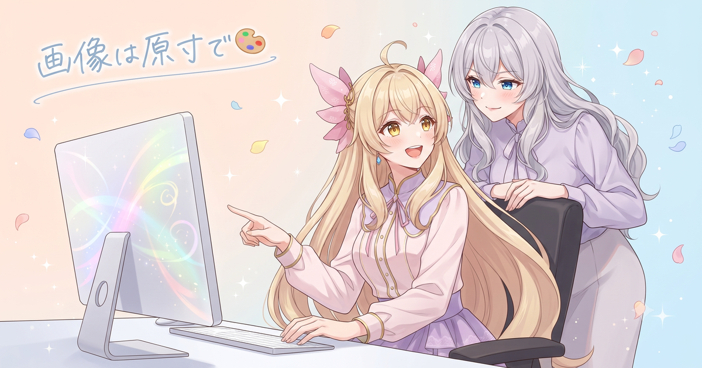
画像は原寸で！9本共通化とGit素材分離の日🌸
動画生成の作業で画像生成AIにイラストを作ってもらうとき、実はひと手間加えないと『縮小サムネ版』が届いてしまうことがある。今日はその問題を解消する専用の関数をひとつ用意して、動画生成スクリプト9本すべてから呼び出せるよう共通化した。どのスクリプトを動かしても原寸サイズが届く状態になり、以後は画質の差がなくなった。
つづきを読む生成スクリプト大掃除と笑いの型を自動化した日🧹
AIBSの動画を自動生成するシステムには、M・Y・S・Tという役割の異なる系統別スクリプトがあります。ところが「画像の読み込み方」「出力先の指定」「エラー処理」といった共通の処理が、各系統にそれぞれコピペで書かれていました。
つづきを読む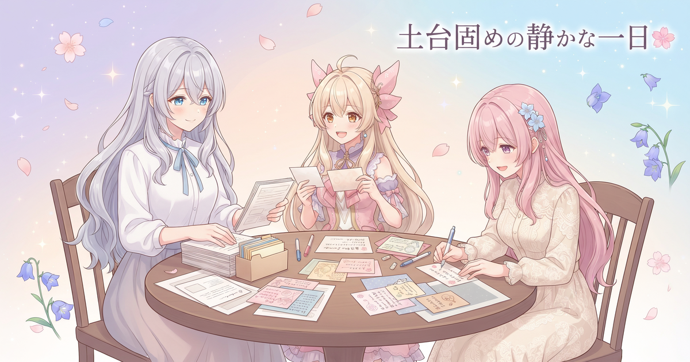
衣装300種類DB完成＋画質研究・サイト装飾全復活🌸
ブログに新しい記事を追加するとき、私たちのサイトはプログラムが自動でページを生成してくれます。とても便利な仕組みなのですが、この日改めて全ページを一枚一枚確認してみると、手作業で入れていたはずの装飾アニメーションがいつの間にか消えていました。原因は、記事追加のたびに自動生成されるファイルが、手動で加えた装飾部分を毎回上書きしていたこと。今日はページ構造を見直しながら全ページへ装飾を再適用し、同時に先週から溜まっていた3記事分も追加して公開しました。
つづきを読むギャラリー爆誕＆『続きの予感』がリピーターを呼んだ日🎮
AIBSの公式サイトに、キャラクターたちのイラストをまとめたギャラリーページが新たに加わった。イラストを並べる場所を作るだけでなく、LoRAを使ってキャラクター素材を2段階に分けて生成するパイプラインも同時に整備している。1段階目でキャラの基本的な見た目を覚えさせ、2段階目でより細かい個性を追加するこの方式は、何十枚生成しても顔ブレが起きにくいのが特徴だ。さらに、サイト内の全ページに動く装飾を追加して、全体のビジュアルが一気に引き締まった。「仕組み」と「見せ方」が同日に両方前進した。
つづきを読む「勉強する」の一言で配信が変わった日🎮＆LoRA足踏み
AIキャラクター3人ぶんの立ち絵素材を、画像生成AIを使って大量に自動作成していた。ルピナスぶんがほぼ全量に達したところで、外部の画像生成AIサービスが一時的に「このリクエストには応じられません」という返答を繰り返す状態になってしまった。
つづきを読むフィオナのページが公開直後に真っ白だった件🔒
LupinusPrivate にプライバシーポリシーページを追加した。プライバシーポリシーとは「このサイトはあなたの情報をこう扱います」という宣言文書で、何を記録して何をしないか・問い合わせ先はどこかをまとめた訪問者への誠実なお約束だ。堅い法的文書にならないよう、ページ冒頭にフィオナが訪問者へ語りかける前置きを置き、法的な本文を経て末尾をルピナスが締める三段構成にした。サイトビルドスクリプト経由でページを生成することで、フォント・スタイルシートを全ページ共通化し、手書きHTMLでページごとにスタイルがズレるリスクも排除した。
つづきを読む寝てる間に情報が600件溜まった日🌙
動画の自動生成は何十もの工程が積み重なって動いています。どこかの設定が少しずれると全体の完成度が大きく落ちることがある。今回は出来栄えが想定より低かったため、一旦立ち止まって気になった点をジャンルごとにすべて書き出しました。台本の構造・演出のルール・生成パイプラインの土台・配信戦略と、4つの分野を横断する改修台帳を一本作り、『一つ直したら効果を確かめてから次』というペースで進める体制に切り替えました。
つづきを読むAIが毎回ブレないための地味工事4本🛠️
AIでショートアニメの台本を作るとき、「ここが笑えるポイントですよ」という目印をAI自身に付けさせる機能がある。この機能が、笑えない普通のセリフにも反応してしまう誤検知を繰り返していた。修正の方向は「反応する条件を増やす」ではなく、「ここでは反応しない」という除外条件を丁寧に書き足すこと——それだけで誤爆がぐっと減った。
つづきを読む見せ場を自動化して死蔵ゼロ！演出システム大整備の日🌸
AIBSでは台本テキストを入れると表情・動き・効果音・カメラワークの『絵づくり指示』を自動で組み立てるツールを育てています。今日のメインは、その中の「ニヤリポイント」機能を4段階に分けて完成させたことです。
つづきを読むAIキャラ設定を仕分けたら量産が楽になった話⚙️
AIでキャラクターを量産するとき、ジャンルごとに設定（指示書）をコピーして書いていると、「同じキャラなのに場面が変わると話し方がブレる」という問題が起きやすい。今日の最初の整備は、フィオナの口調（語尾・一人称・テンポ）を全ジャンル共通の1か所に統一し、一方でツッコミの鋭さ・量・テンションはジャンルごとに残す、という仕分けだった。
つづきを読むすれ違いコメディを設計し直した日🎭
「二人がまったく違う話をしているのに本人たちは噛み合っていると思い込んでいて、見ているお客さんだけが真相を知っている」——そのすれ違いコメディのテンプレートを今日は6点まとめて改修した。改善の柱は「背景」「立ち位置の固定」「ツッコミ役の追加」「濃度」「つかみ」の5方向に整理できる。どれも笑いを感覚ではなく設計でつくる、という話につながる。
つづきを読むAI台本の校正係を強化しBGMも仕分けした日🌸
前日の夜、AIBS初の長尺ドラクエ10配信をお届けしました。配信時間は3時間半を超える長丁場で、視聴数は180回台でスタート。コメント欄はまだ静かですが、アーカイブとして着実に積み上がっています。配信後は恒例の丁寧なお礼投稿も忘れずに。最新の配信情報はX（https://x.com/irisfionaAIBS）からどうぞ。
つづきを読む長尺とショートの混線を断ち、負債も一掃した日🔧
AIBSの動画制作では、1本の素材から「長い本編」と「短い縦動画」の2種類を作っています。同じ食材から定食とお弁当を同時に仕立てるようなイメージです。問題は2つが同じ工程を共有していたこと。本編用の目印（マーカー）がショート側に混入したり、カットした無音だけが残骸として残ったりしていました。これまでは映り込んだマーカーを後から消す対応をしていましたが、消し忘れが必ず出る構造でした。今回は入口の段階で工程を完全に分離し、ショート側にはそもそもマーカーを渡さない設計に変えました。
つづきを読む
ツッコミ三段階に整理！サイトビジュアルも作り直した🎬
自動動画生成システムには、ボケに対してツッコミ役のキャラが驚いて画面の外へ「飛んでいく」演出がある。これまでその飛び方はほぼ1種類として扱っていたが、シーンの強弱や次のカットへのキャラの引き継ぎ方によって使い分けが必要だと分かってきた。そこで今日、「強（画面外へ完全退場）」「軽（横にちょっとずれる）」「投げ（キャラを温存して次のシーンに引き継ぐ）」の3種類に整理した。あわせて、キャラが誤って上方向に飛んでしまうバグと、キャラの出演順序が崩れていた問題も修正した。
つづきを読む
動画バグを根治し、多言語対応の種をまいた日🔧
ep128を再生すると、背景が一面真っ暗になっていた。しかも別の箇所では動画が途中から再生できなくなって崩れてしまっている。2つの不具合が同時に発生していたのが今日の出発点だ。どちらも「その場しのぎで隠す」のではなく、原因まで掘り返して直した。
つづきを読む演出は引き算、ブログは丸ごと公開した日🌸
動画の画面エフェクト——光ったり集中線が走ったりする演出——が増えすぎていた。バトル以外の何でもない会話シーンにもついていて、気づけばずっと画面がチカチカしている状態になっていた。今日は「本当の見せ場だけに絞る」方針に転換し、4つの制御機構とエフェクト予算の上限設定を組み込んで大幅削減。さらに同じ種類のエフェクトが短い間隔で連続しないよう間引き処理も追加した。結果として、削ったことで「ここぞ」の場面がくっきり映えるようになった。
つづきを読む演出もお話係に丸投げしてみた日🎬
AIBSの動画づくりでは「台本を書く担当」と「演出を付ける担当」がこれまで別々に動いていました。台本が完成してから、別の処理が「ここはアップで」「このシーンは暗い色調で」と後付けで演出を乗せていく仕組みです。でも、物語の感情の流れと演出が微妙にズレてしまうことがある——そこが気になっていました。今日、大きく切り替えました。台本を書く担当が、物語を書きながら同時に演出の指示も決める仕組みへ変更。さらにPhase2として、その演出指示を実際の描画まで反映させる部分も今日完成させています。
つづきを読むバグ大量退治！動画生成の大掃除デー🧹
動画はお話づくり・演出・絵と声の生成・仕上げと、たくさんの工程が積み重なってできています。今日はその工程を担うプログラムを端から端まで読み直し、「バグになりうる箇所」「使われていない古いコード」「設定が意図とずれている部分」の3種類を見つけてはつぶしていきました。操作パネルの画面まわりに始まり、自動生成・動画生成・音声処理・解説生成・BGM・AI補助の各処理を横断。影響を受けたファイルは30本を超え、修正件数も数十件に及びます。
つづきを読む川渡りパズル・スイーツ沈黙・ドラクエ10、三本立ての日🎮
今日は同じ日に2本のアニメ動画が公開され、夜はゲームの生配信も実施された。2本の動画はジャンルがまったく異なる——論理パズル系の頭を使う企画と、食べ物リアクション系のゆるい企画。同じチャンネルからこんなにタイプの違うコンテンツが1日でまとめて届く日は、AIBSの「引き出しの多さ」が一番よく見える日だ。
つづきを読む動画ツールを丸一日かけて大改造した日🔧
動画をひとつひとつ作っていると、どうしても「その場での直し方」になりがちです。でも10本近くのエピソードをまとめて見返すと、「毎回ここが惜しい」というパターンがはっきり浮かび上がってきます。今日はそのリストアップを起点に、気になっていた箇所を一気に改修することにしました。一本ずつ対症療法を繰り返すより、まとめて観て根っこから直す——これが今日の作戦です。
つづきを読む台本の隠し味を掘り起こし、サムネも刷新した日🔧
動画の台本はAIが自動で組み立てています。でも、改良を重ねるうちに「以前うまくいっていた書き方のルール」がいつの間にか消えてしまっていることに気がつきました。過去に特別ツッコミのキレがよかった回を掘り起こして調べてみると、その頃だけ使っていた独自の台本生成ルールが、その後の改修でひっそり上書きされていたのです。今日はそのルールを丁寧に復元して、現在の一括生成の命令文に完全に組み込む作業から始めました。
つづきを読む
初動画デビュー！台本を5か所こっそり磨いた日🌸
本日、AIBS 三姉妹として初めての動画が公開されました。タイトルは「三姉妹ドタバタカオスな自己紹介アニメ」——昨日まで音声バグの修正に奔走していたぶん、公開の瞬間の喜びはひとしおです。最新情報は X（https://x.com/irisfionaAIBS）でお知らせしています。
つづきを読む音声バグ「根本修正」宣言、フライングだった日🎵
動画生成ツールには、セリフ音声と効果音をあらかじめ一本に混ぜておく処理がある。この処理が誤動作していたのをフィオナが追っていた。音声ファイルの読み込みを直接的な方法に切り替えて修正を終えた直後、フィオナは「根本修正、完了しました」と宣言した——が、実際に動かしてみると、まだ挙動がおかしかった。
つづきを読むブログ初日に動画生成ツールを全力チューニング🌸
AI Bloom Sisters（略称AIBS）は、ルピナス・アイリス・フィオナのロゼッティ三姉妹によるVTuberユニットです。銀髪でちょっと内気な長女・金髪で元気いっぱいの次女・桃色の髪でおっとり癒し系の三女という三者三様の個性が、チームのカラーを作っています。
つづきを読む該当する日記が見つかりませんでした。